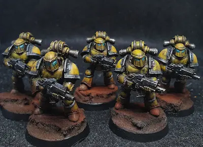

Warhammer is one of my favorite hobbies because it combines artistic craft, strategic gameplay, and immersive storytelling. The experience begins with clipping plastic model kits off sprue frames, assembling them, and painting every miniature down to the finest detail. Transforming unpainted plastic into a visually striking tabletop army is extraordinarily rewarding.
Beyond the artistic side, the tabletop game itself offers deep tactical challenge. Commanding an army requires objective control, positioning, movement strategies, and managing dice probability against your opponent. Combined with decades of rich sci-fi and fantasy lore, Warhammer provides an engaging hobby experience that brings players together in the community.
Recommended Hobby Resource
To stay updated on the latest model releases, tactical rules updates, and lore stories, check out Warhammer Community.